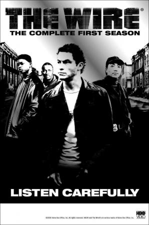

-
The Wire (9.3/10 on IMDB)
The streets of Baltimore as a microcosm of the US's war on drugs, and of US urban decay in general. Seen not only through the eyes of a few policemen and drug gang members but also the people who influence and inhabit their world - politicians, the media, drug addicts and everyday citizens.
-
The big Lebowsky (8.1/10 on IMDB)

Ultimate L.A. slacker Jeff "The Dude" Lebowski, mistaken for a millionaire of the same name, seeks restitution for a rug ruined by debt collectors, enlisting his bowling buddies for help while trying to find the millionaire's missing wife.
-
Pulp Fiction (8.9/10 on IMDB)
The lives of two mob hitmen, a boxer, a gangster and his wife, and a pair of diner bandits intertwine in four tales of violence and redemption.